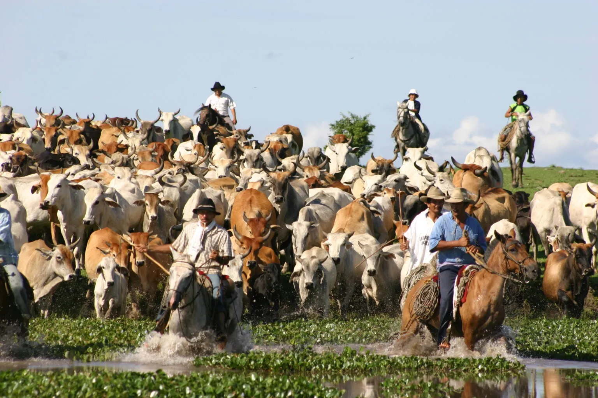

CASANARE
TURISMO EN EL DEPARTAMENTO
Casanare es un destino ideal para el ecoturismo, la observación de fauna y la cultura llanera.
ATRACCIONES TURÍSTICAS
- Parque Nacional El Tuparro
- Reserva Natural Wisirare
- Río Cravo Sur
- Atardeceres llaneros
COMIDA TÍPICA
La gastronomía casanareña es famosa por sus platos llaneros como la mamona, el caldo de carne y la cachama frita.
- Mamona (ternera a la llanera)
- Carne asada al estilo llanero
- Cachama frita
- Hayacas


SECTOR ECONÓMICO
La economía de Casanare se basa en la ganadería, el petróleo y la agricultura.
- Casanare es uno de los principales productores de petróleo en Colombia.
- La cría de ganado bovino es una de las actividades económicas más importantes del departamento. 
- Se destacan los cultivos de arroz, plátano y yuca.
PETRÓLEO

GANADERÍA

AGRICULTURA


Para volver a la página principal presione aquí: volver